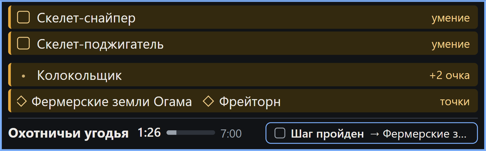
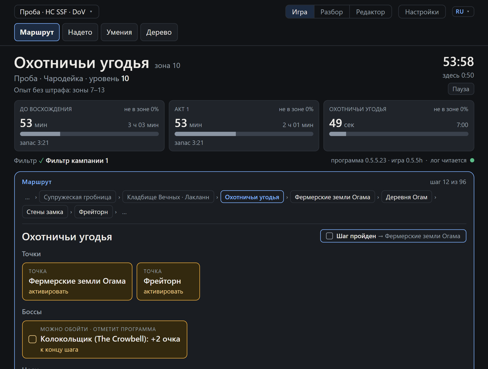
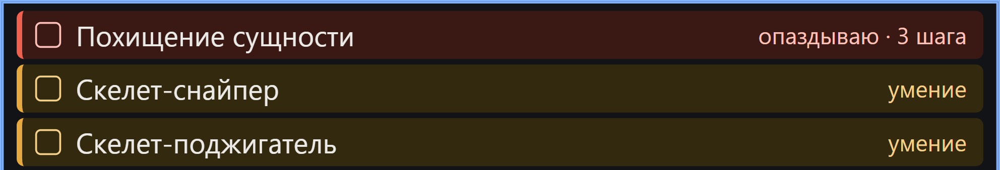
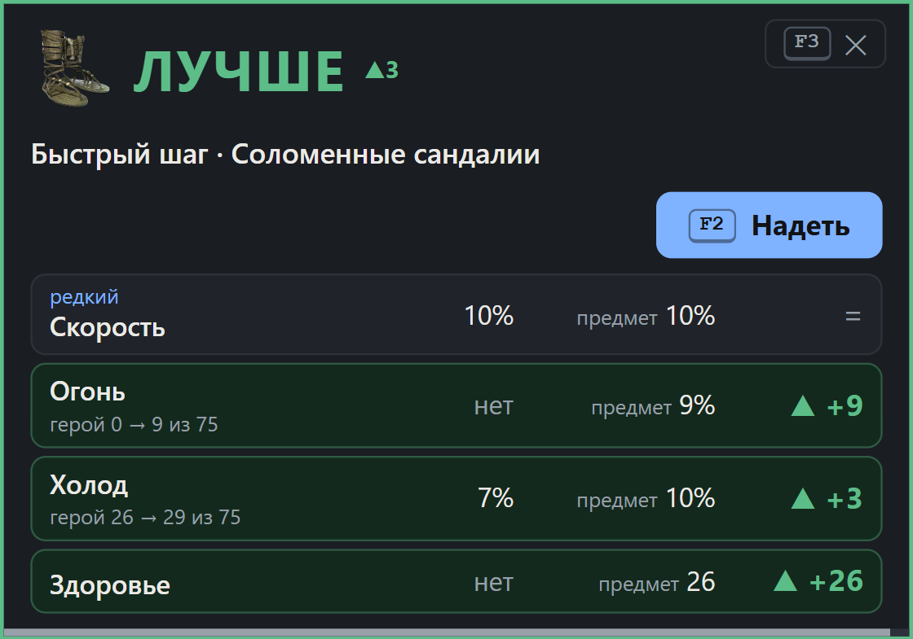
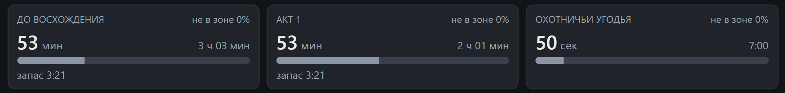
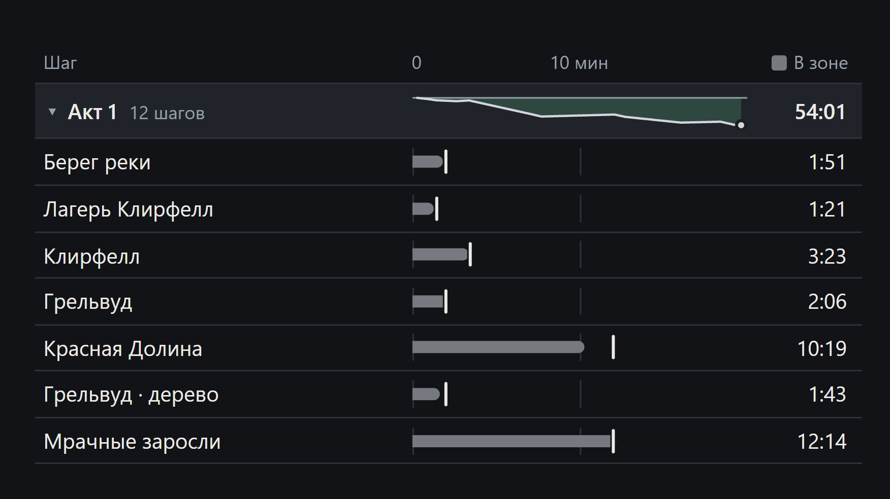
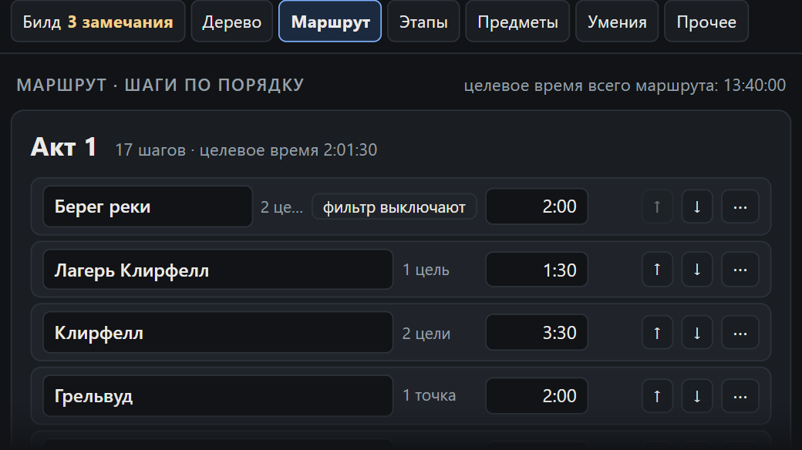

Играйте как про
Сотни часов проб и ошибок за вас уже потратил автор плана. Runbook ведёт вас по нему: куда идти, кого убить и что взять в каждой зоне.
Скачать для WindowsАвтору билда
Первая сборка ещё не опубликована

Вы просто играете
Вошли в зону — Runbook уже показывает, что в ней делать. Уровень, награды и узлы дерева отмечает сам.

Красная строка не уйдёт
Автор плана знает, к какому шагу что должно быть взято и надето. Опоздали — строка краснеет и остаётся, пока не сделаете.

Надеть или выбросить
F2 над предметом — и видно, лучше он надетого или хуже. По статам, которые выбрал автор плана.

В темпе автора
У каждого шага и акта — время из плана. Видно, где вы идёте с запасом и где отстаёте.

Аналитика
Каждая минута на счету
После игры «Разбор» показывает, куда ушло время: по шагам, в зоне, в городе и в стороне от маршрута. Сравните с прошлым героем — и увидите, где стали быстрее.


Знаете, как лучше?
Соберите свой план. Кампания уже размечена: каждая зона, босс и награда — добавьте билд и сроки.
PoE2 Runbook
Вопросы
У меня уже есть гайд. Зачем мне Runbook?
Гайд нужно читать, помнить и сверять с игрой. Runbook идёт вместе с вами: знает, в какой вы зоне, и показывает, что делать сейчас.
Плана под мой класс нет. Что делать?
Планы появляются в каталоге, когда ими делятся авторы. А пока можно собрать свой: кампания уже размечена, остаётся добавить билд.
Вышел патч. Runbook будет работать?
После патча нужна новая сборка Runbook. Пока её нет, программа предупредит, что игра новее. Когда выйдет — обновится одной кнопкой.
Список не появляется поверх игры
Так бывает, когда игра идёт в полноэкранном режиме: она закрывает собой окна Runbook. Выберите в настройках игры оконный полноэкранный режим — и список появится. Если не появился, проверьте в «Настройках» Runbook, что окна поверх игры включены.
Windows не даёт запустить установщик
Установщик пока не подписан, и Windows не знает его издателя. Нажмите «Подробнее», затем «Выполнить в любом случае». Как сверить файл перед запуском
Мне не хватает функции. Можно попросить?
Можно. Это первая версия, программа будет развиваться, и принимаются любые запросы: напишите, чего не хватает или что работает не так. Написать автору · Задачи на GitHub